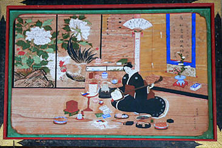
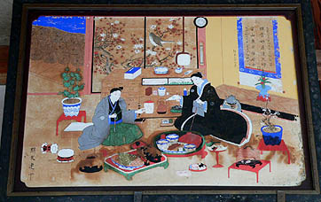
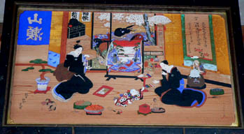
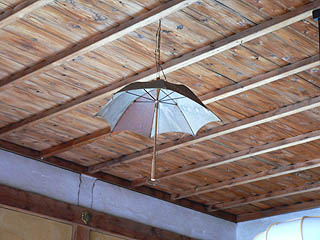
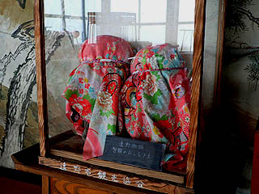

供養絵額；瑞応院
善明寺の隣にある瑞応院。
来意を告げるとモダンな大黒さんがいらしゃった。遠野のお寺はどこも大黒さんが元気だ。で、話好き。
遠野物語が生まれたのも、遠野が民話の里といわれるのも、遠野の人達の「人に話したい、伝えたい」というキャラによるものではなかろうか。
で、絵額である。
掲げられている絵額の数は少ないが仕侯の絵額をはじめ保存状態の良い傑作が多い。

仕侯71才の画。仕侯の絵額は襖絵にそのレベルの高さが伺える。三味線の稽古をする女性の没年は明治14年。

銘はないがこれも仕侯の作か。豪華な料理を前に一献傾ける夫婦。左に暖簾が見えているのは商家の夫婦だったのだろうか。暖簾の下には米俵が積まれている。

これも仕侯の作。打掛がリッチっぽい。
左の女性は襖の奥の抽き出しから銭を取り出しているが、位置的に整合性を欠いている。天然のトリックアートのようだ。

ここにも傘が下がっていた。もちろん傘アゲモノの一部だ。
大黒さんの話によると子供の頃は傘に吊るしてあった玩具が欲しくて「早く落ちて来ないかな〜」と待っていたそうだ。
やっぱお寺の子供は奉納玩具で遊んでいるのか〜。
絵額、化真（遺影）、傘アゲモノと遠野三大供養グッズ揃い踏みの寺だった。

内陣の脇には包頭型のオシラサマが一対あった。
これも面倒を見ることが出来なくなった人が寺に預けたものだ。
長泉寺 常楽寺 西来院 喜清院 光岸寺 善明寺 瑞応院⇒ 柳玄寺
供養絵額トップページに戻る
珍寺大道場 HOME